Chapter 6 · Part 1 — The Writing on the Wall
Jack and Annie squinted at the wall.
A series of tiny pictures were carved into the stone.
“There are four pictures here,” Jack told the -.
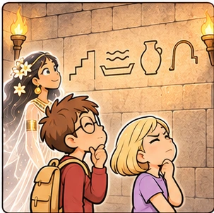
“Describe them to me, Jack. One at a time, please,” she said.
Jack studied the first picture.
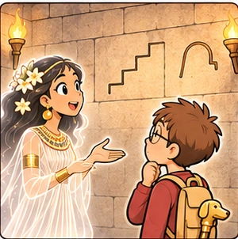
“Okay,” he said. “The first one is like this.” He made a zigzag in the air with his finger.
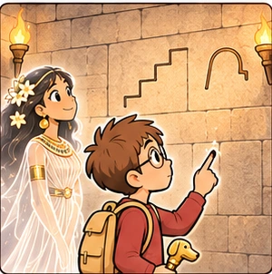
“Like stairs?” asked the -.
“Yes, stairs!” said Jack. “Just like stairs.”
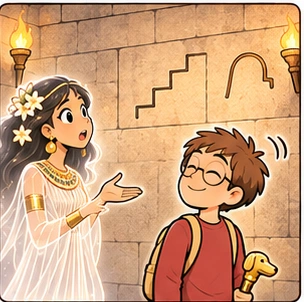
She nodded.
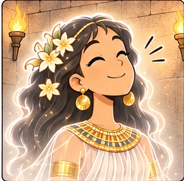
Easy enough.
Jack studied the second picture.
“The second one has a long box on the bottom,” he said. He drew it in the air.
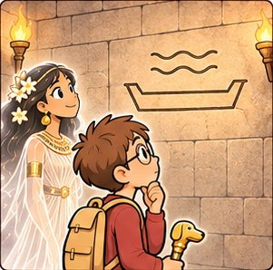
The - looked puzzled.
“With three things on top. Like this,” said Annie. She drew squiggly lines in the air.
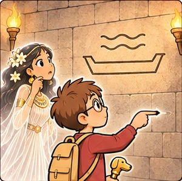
The - still seemed puzzled.
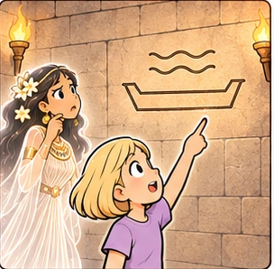
“Like a hat,” said Jack.
“Hat?” said the -.
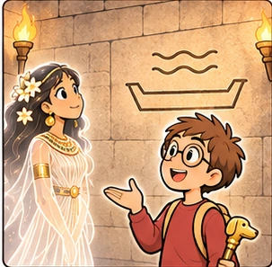
“No. More like a boat,” said Annie.
“Boat?” said the -. She got excited. “Boat?”
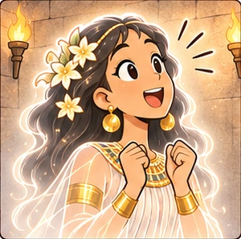
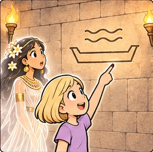
Jack took another look at the wall.
“Yes. It could be a boat,” he said.
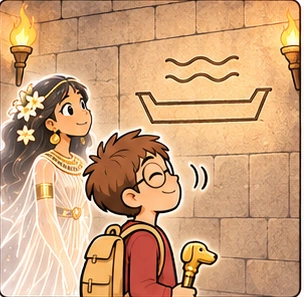
The - looked very happy. She smiled.
“Yes. Of course,” she said.
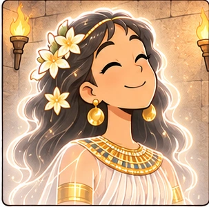
Jack and Annie studied the next picture.
“The third one is like a thing that holds flowers,” said Annie.
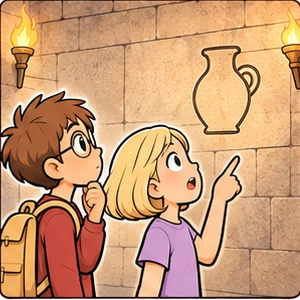
“Or a thing that holds water,” said Jack.
“Like a jug?” asked the -.
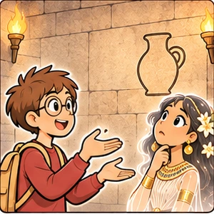
“Exactly,” said Jack.
“Yes. A jug,” said Annie.
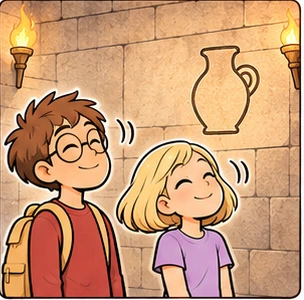
Jack and Annie studied the last picture.
“And the last one looks like a pole that droops,” said Annie.
“Like a curved stick,” said Jack. “But one side is shorter than the other.”
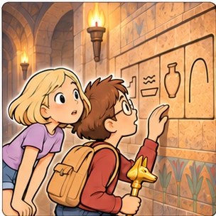
The - looked puzzled.
“Wait,” said Jack. “I’ll draw it in my notebook. Big! So you can see it.”
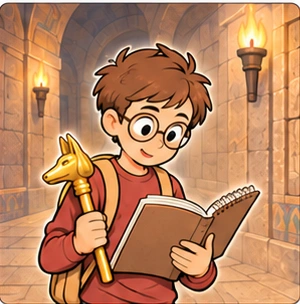
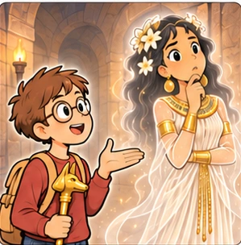
Jack put down the scepter and got out his pencil. He drew the hieroglyph.
“A folded cloth,” said the -.
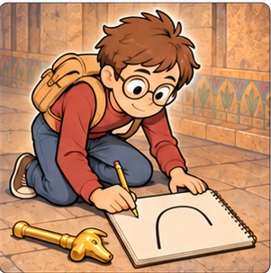
“Well, not really,” said Jack. He studied his drawing.
“But that is the hieroglyph for a folded cloth,” said the -.
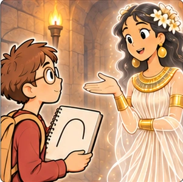
“Well, okay,” said Jack.
He looked at the fourth hieroglyph again. He still couldn’t see the folded cloth. Unless it was like a towel hanging over a bathroom rod.
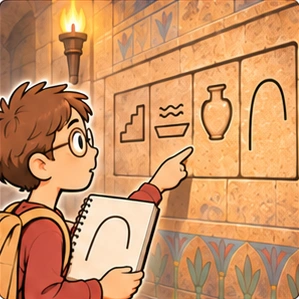
“So that’s all of them,” said Annie. She pointed at each picture. “Stairs. Boat. Jug. Folded cloth.”
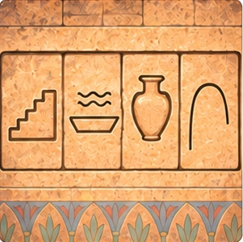
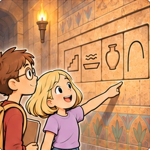
Jack wrote the words in his notebook.
stairs = [stair drawing] Jug = [jug drawing] boat = [boat drawing] cloth = [folded-cloth drawing]
“So what does the message mean?” he asked the -.
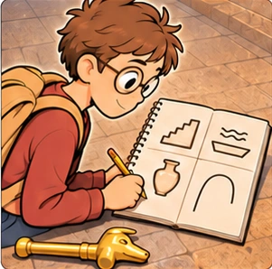
“Come,” she said. She held out her hand.
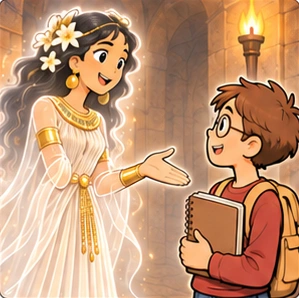
“Come to my burial chambers.”
And she floated away.
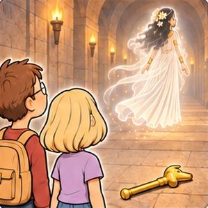